Rok na cestě kolem světa
Je 10.7.2017, Den D. V den mých 30. narozenin jsem se rozhodl vycestovat na dlouhou cestu kolem světa. Zrušil jsem nájem, prodal jsem auto a zbavil se všeho ostatního. Zůstal jen přibližně 6 kg vážící balíček. Jediné dvě dražší věci, které mám, je 5 let starý MacBook Air 11” a telefon, vše ostatní nemá hodnotu. Původně jsem chtěl jet s tímto baťůžkem, ale prý se větve stromů nesmí brát do letadla.
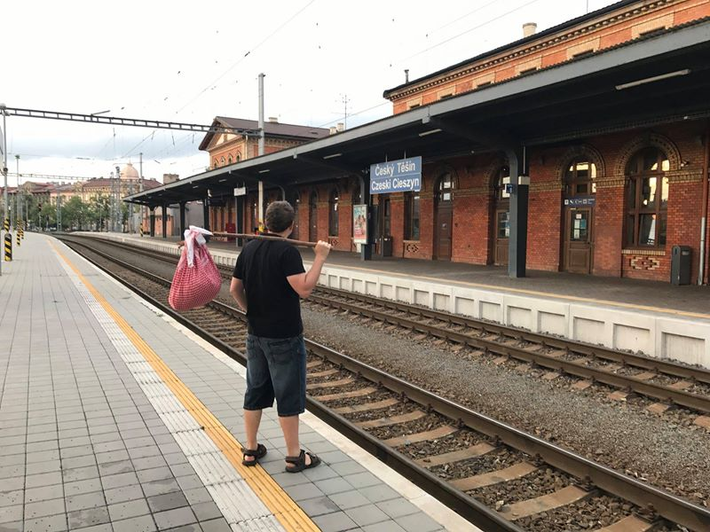
Jako první destinaci jsem si vybral Mongolsko. Hned po příletu jsem zamířil na vrchol Zaisan, odkud je možné vidět celé hlavní město Mongolska. Proč? Odpoví tyhle dvě fotky. Obě jsou ze stejného místa. Na té spodní jsem já, na té horní je můj otec (v bílém kabátu). Obě fotky dělí více než 40 let. Můžete vidět, jak se město za tu dobu změnilo.
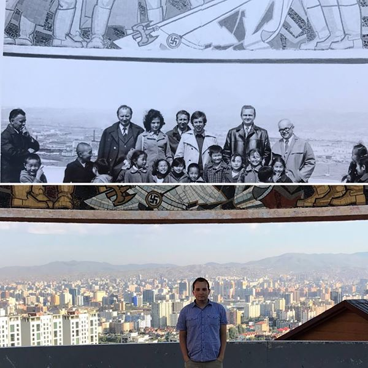
V Ulaanbaataru jsem strávil jen chvíli a vydal se na venkov. Souhra náhod mě dovedla až někam do pouště Gobi, daleko mimo civilizaci, kde jsem strávil pár dní s mongolskou rodinou.
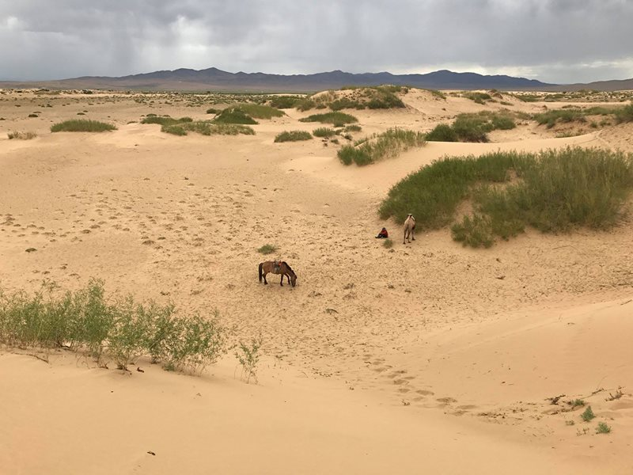
Naučil jsem se zde třeba jezdit na velbloudovi. Tady neslouží pro turisty, ale používá se v každodenním životě. Tady jsme šli zahnat ovce nebo co to bylo po celodenní pastvě zpět do ohrady.
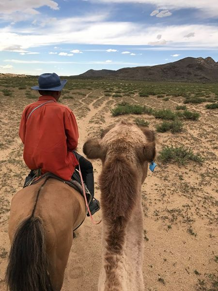
Jednoho dne mě také nainstalovali na koně. Seděl jsem na něm poprvé v životě. “Dobrý? Fajn, tak můžeme!”, řekli mi po chvíli klidné chůze a já si následně vyzkoušel, co to znamená, když kůň běží naplno. Nevím, zda je pohled na svět z hřbetu koně skutečně úplně nejhezčí, ale určitě je jeden z nejhezčích.
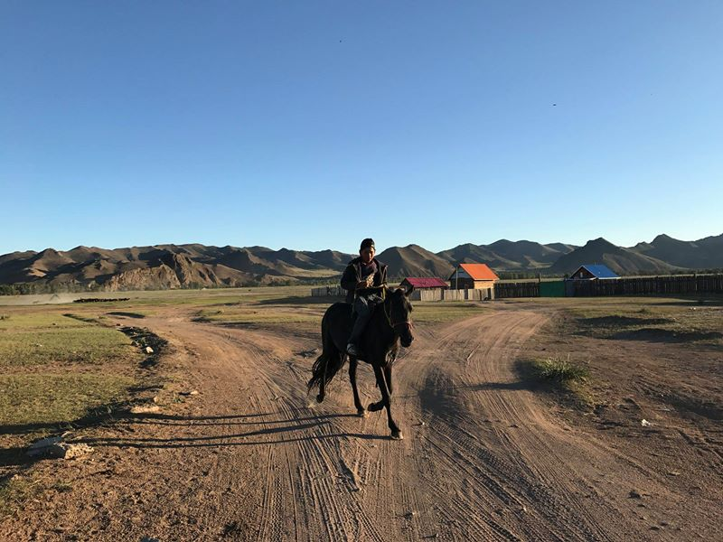
V Mongolsku jsem poznal jiný svět. Poprvé jsem třeba viděl děti, které od mala fungují samostatně. Probouzejí se s východem Slunce a jdou spát s jeho západem. Nikdo je do postele nežene, nikdo jim nic nepřikazuje, nikdo je neokřikuje. Dělají si už od mala, co chtějí. Tady čtyřletý Amra měl třeba rád skládání Rubikovy kostky (já ji neumím složit ani ve 31).
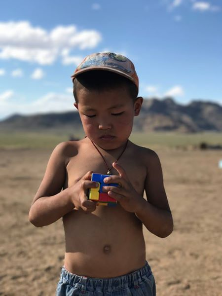
Cestou zpět jsem si vyzkoušel poprvé v životě stopování. První dva řidiče bylo nutné odmítnout, protože byli totálně namol, takže vyšel až třetí pokus s autem plným Mongolek. Dvě na mě hned po začátku usnuly. Možná kvůli toho, že tam nebyla ta sprcha a vůně potu je omámila.
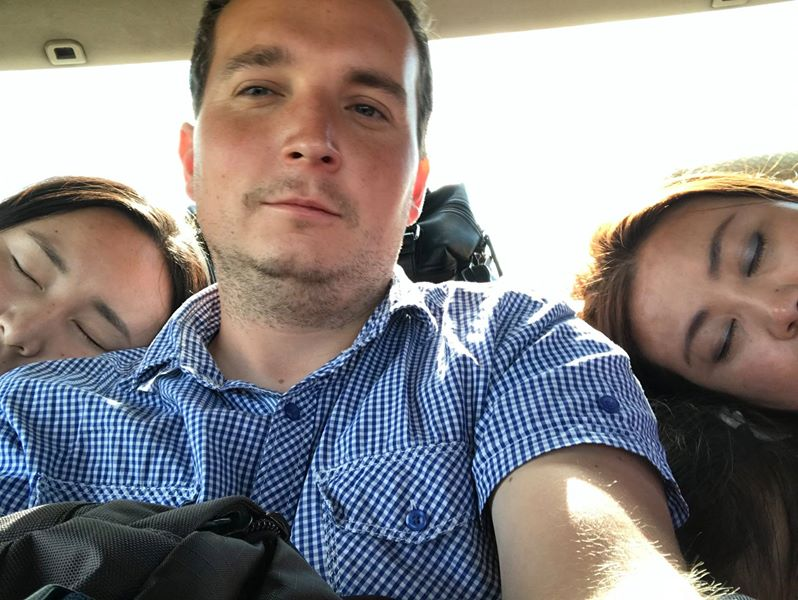
V Mongolsku jsem navštívil několik míst, ale přibližně polovinu času jsem strávil přímo v Ulaanbaataru. Poprvé v životě jsem využil Airbnb a strávil jsem 2 týdny u Mashi, která mě pravidelně brala do centra a díky ní jsem poznal Mongolsko jinak, než většina ostatních
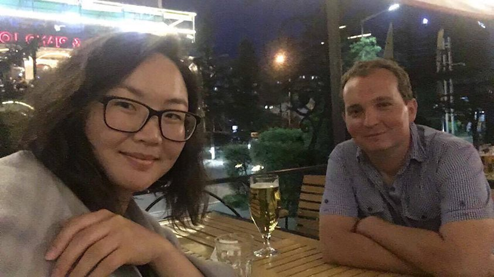
V Ulaanbaataru jsem bydlel mimo centrum, v sídlišti, které bylo Mongolsku darováno Sovětským svazem a domy byly postaveny do tvaru SSSR. Bylo to velké vystoupení z komfortní zóny, tyhle paneláky v Česku nemám rád a vyhýbám se jim, ale tady jsem se v nich naučil žít.
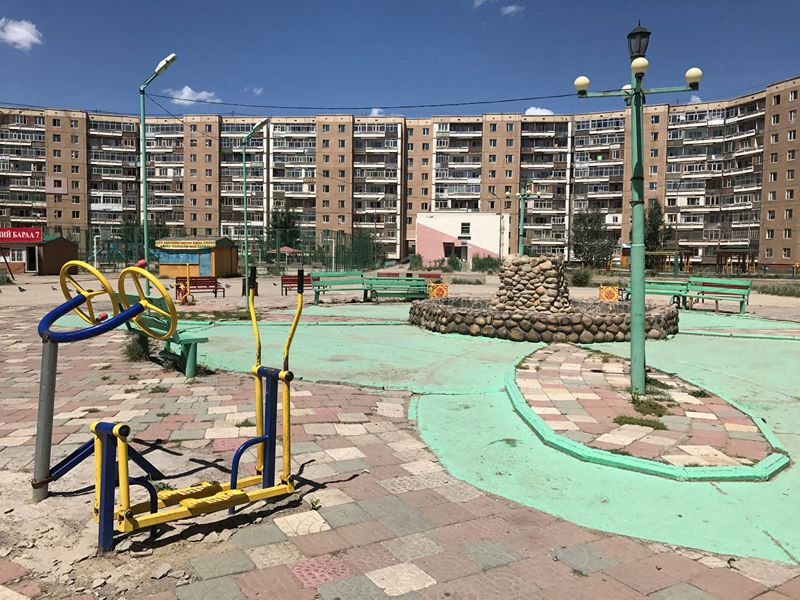
Po měsíci v Mongolsku následoval přelet do Pekingu a poté do Xi’anu. Kvůli špatnému počasí byly všechny lety zrušeny a já musel strávit 2 dny na letišti. Trvalo 7 hodin, než jsem se dostal k někomu, kdo mi vystavil novou letenku, protože tisíce lidí obsluhovala jen jedna přepážka. Do Číny jsem navíc přijel bez VPN, takže jsem se dva dny nemohl s nikým spojit, protože Čína všechno blokuje, dokonce i třeba Google Mapy.
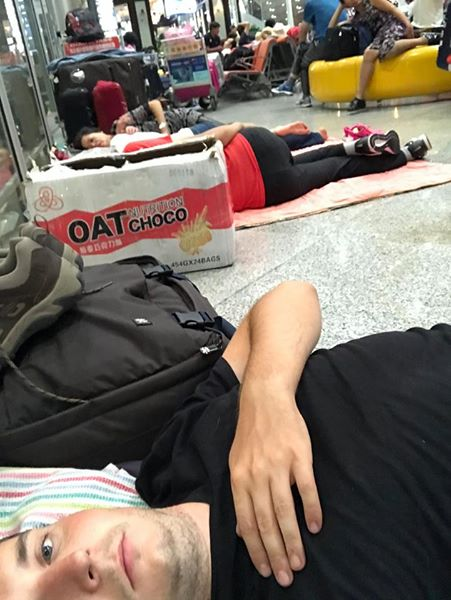
Týden v Xi’anu jsem bydlel u mé skvělé hostitelky 默. Celý týden mě provázela Čínou, dozvěděl jsem se vše o běžném životě Číňanů a třeba o tom, jak se Čína proměnila v posledních letech z chudé země do země, kde jsou na jedné straně velmi bohatí lidé v superměstech a na druhé straně velmi chudí lidé bez možnosti dostat se do té vyšší skupiny. Zároveň jsem poznal poprvé někoho, kdo obhajuje cenzuru internetu i to, že Číňané mohou mít maximálně dvě děti (což podporuje většina Číňanů).
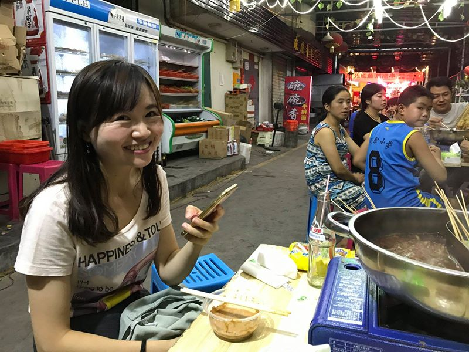
Nikde v Asii jsem však nepotkal tolik lidí, kteří by mě zvali na oběd jako právě v Číně. Z Xi’anu jsem jel na jih Číny 2 dny vlakem na jih do Kunmingu a potkal jsem tam mimo jiné tohoto farmáře, který neustále volal anglicky hovořící sestře, přes kterou jsme si povídali.
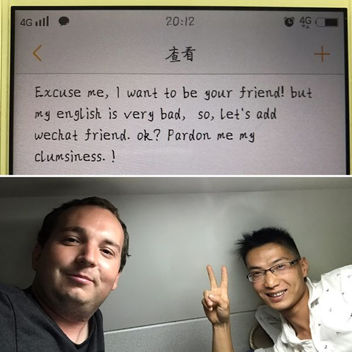
V Kunmingu jsem potkal drobnou Číňankou 睿, se kterou jsem zde strávil nejlepší dny mého života. Až do dnešního dne za mnou 睿 každý měsíc někam jezdí, už jsme se potkali v 9 různých zemích. Když jsme se setkali poprvé, uměla 4 slova anglicky: happy, unhappy, hungry a full. To bylo velice výhodné, protože jsem na první schůzku přišel o půl hodiny později a ona byla naštvaná, ale neuměla mi to říct.
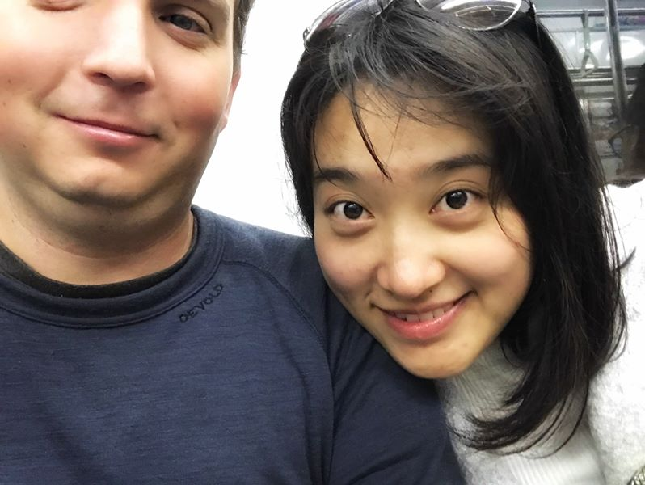
Díky ní jsem poznal Čínu do detailu. Dokonce mě přesvědčila, abychom si vyzkoušeli karaoke, oblíbenou zábava všech Asiatů, což se nikdy nikomu předtím nepovedlo a nepovede.
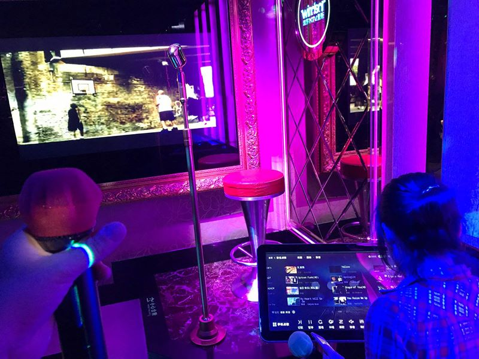
Měsíc v Číně uběhl jako voda. V Kunmingu jsem se rozhodl koupit si kolo a dojet s ním až do Bangkoku. Tohle kolo na obrázku to není, to mé jsem dostal bez psa.
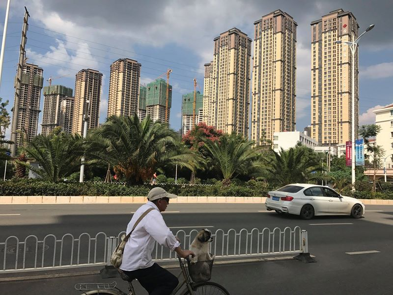
A pár dní před vypršením víza jsem vyrazil na cestu směr Vietnam. Tohle je Stone Forest kousek od Kunmingu. Vypadá to hezky, ale to je protože na druhé straně fotky nevidíte několik tisíc Číňanů, kteří sem přijeli taky.
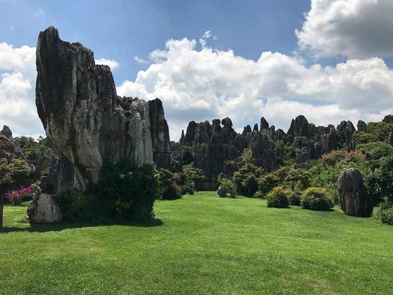